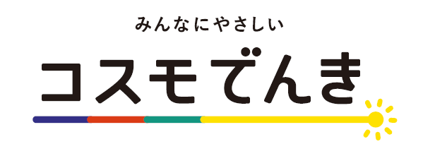

新電力の「安い」は単価の話でしかない
電力自由化以降、新電力の比較サイトは「大手より○%安い」という数字であふれている。 だがその比較のほとんどは基本料金と電力量料金（単価）だけを見ている。 実際の請求額は、そこに毎月変動する二つの項目が乗る。
差がつくのは3番目の燃料費調整額だ。そして新電力選びの落とし穴もここにある。
燃料費調整額の上限とは何か
上限なしのプランでは、この部分がそのまま請求書に乗る。
※ 縦軸は平均燃料価格（原油・LNG・石炭の輸入価格の3か月平均）の水準。
上限線があるかどうかだけで、請求額に天井があるかが決まる。
燃料費調整制度は、燃料の輸入価格の変動を電気料金に自動で反映させる仕組みだ。 燃料が安ければマイナス（値引き）になり、高ければプラス（値上げ）になる。
大手電力の規制料金（東京電力なら「従量電灯B」など）には、この調整額に上限が設けられている。 基準となる燃料価格の1.5倍を超えた分は電気料金に転嫁されない、つまり燃料がどれだけ高騰しても請求額に天井がある。
一方、新電力のプランや大手電力の自由料金プランは、上限を設定するかどうかが各社の裁量に委ねられている。 そして2022年のロシア・ウクライナ情勢による燃料価格の急騰で、上限を設定していた新電力の多くが上限を撤廃した。 撤廃しなければ会社が持たなかったからだ。
上限がないと、大手より高くなる
上限を撤廃したプランでは、燃料費調整額がそのまま請求書に乗る。 燃料高騰時に何が起きたかは、東京電力エリアの2023年1月の実績が分かりやすい。
| 2023年1月・東電エリア3人世帯 | 燃料費調整額（月額） |
|---|---|
| 上限ありのプラン（規制料金など） | 1,692円 |
| 上限なしのプラン | 4,286円 |
| 差額 | ＋2,594円 / 月 |
* 出典：エネチェンジ「燃料費調整額の上限がある電力会社」。同一使用量での比較。
単価が数%安いことを売りにしていた新電力でも、月2,500円以上の上乗せが乗れば簡単に逆転する。 つまり「安いはずの新電力に乗り換えたのに、東京電力の従量電灯より高い」という事態が、契約者の努力とは無関係な外的要因だけで発生する。 これが新電力選びで最も見落とされている注意点だ。
上限を維持している新電力はほぼ残っていない

では上限ありのプランを提供している新電力はどれだけあるのか。 答えは実質2社。コスモでんきと、奈良県が地盤の「ならでん」だけだ。 ならでんは供給エリアが限られるため、全国で現実的な選択肢になるのはコスモでんき一択ということになる。
コスモでんきは沖縄を除く全国9エリア（北海道・東北・東京・北陸・中部・関西・中国・四国・九州）に対応し、 家庭向けメニューの燃料費調整単価は各エリアの大手電力と同じ単価・同じ上限で運用されている。
単価は大手と同等のまま、割引またはdポイント分だけ純粋に得をする構造
コスモでんきの構造 — なぜ「必ず」得なのか
コスモでんきの家庭向けメニューは、基本料金と電力量料金の単価をエリアの大手電力と同じに設定した上で、 そこから割引またはポイント還元を上乗せする形をとっている。 単価が同じで燃料費調整も同じなら、差し引かれる割引の分だけ必ず安くなる。 「相場が動いたら逆転する」という新電力特有のリスクが、構造的に存在しない。
ガスとのセット割や動画配信サービスの抱き合わせで見かけ上の割引率を演出する会社が多いなか、 コスモでんきは電気代そのものから引く。他のサービスを契約させられることがない点も評価できる。
3つのプランをどう選ぶか

家庭向けには「スタンダード」「グリーン」「ポイントプラス」「セレクト」がある。 セレクトはLeminoプレミアムやdマガジンとのセットなので、動画・雑誌を見ない人は除外していい。実質は3択だ。
スタンダード — 使った分だけ現金で引かれる
単価は大手電力と同一で、月間使用量に応じて電気料金から直接割引される。 東京電力エリアの場合、割引額は月110円〜1,180円のレンジ。 30A・350kWh の世帯で月260円、50A・500kWh の世帯で月870円が引かれる計算になる。
* 割引額は使用量とエリアで変わる。自分の検針票の使用量を当てはめて確認すること。
グリーン — 罪悪感を少し減らす
グリーンは、再生可能エネルギー指定の非化石証書を購入・償却することで、 使った電気のCO2排出量を実質ゼロとして扱えるプランだ。 物理的に届く電気そのものが変わるわけではないが、環境価値の裏付けは制度として担保されている。
割引の水準はスタンダードより控えめになるため、金額面のお得さは少し減る。 その差額を「CO2実質ゼロの対価」と見なせるかどうかが判断基準になる。 電気を使うことへの後ろめたさが月に数百円で解消されるなら安い、という考え方は十分に成立する。
ポイントプラス — dポイント派の最適解
電気料金に応じてdポイントが1〜5%還元される。還元率は月の電気料金で段階的に決まる。
| 月の電気料金 | dポイント還元率 | 還元の目安 |
|---|---|---|
| 5,000円未満 | 1% | 〜50pt |
| 5,000円〜8,000円未満 | 3% | 150〜240pt |
| 8,000円以上 | 5% | 400pt〜 |
公式の例では月11,000円（税込）の世帯で毎月約500ポイント、年間6,000ポイント。 dポイントは1ポイント1円としてドコモの料金やコンビニ・マクドナルド・ローソンなどで使えるため、 日常的にdポイント経済圏にいる人であればスタンダードの現金割引を上回る。 月の電気料金が8,000円を超える世帯なら、ほぼこれが最適解になる。
* 還元の対象は電気料金部分で、燃料費調整額・再エネ賦課金は計算から除かれる。付与にはdアカウントの登録が必要。
注意点
オール電化向けメニューには上限がない
これが最大の落とし穴だ。コスモでんきでもオール電化向けメニューは燃料費調整額の上限が設定されていない。 上限が付くのはスタンダード／ポイントプラス／セレクト／グリーンの一般向けメニューのみ。 オール電化住宅に住んでいる場合、この記事の推奨はそのままは当てはまらない。
使用量が少ない世帯では旨みが小さい
割引もポイント還元も使用量・料金額に連動するため、一人暮らしで使用量が少ない世帯では効果が限定的になる。 ポイントプラスの場合、月5,000円未満なら還元率は1%にとどまる。 ただし単価が大手と同じである以上、切り替えて損をすることはないのがこのプランの性質だ。
貯まるポイントはdポイントのみ
楽天ポイントやPontaを主軸にしている人にとって、ポイントプラスは価値が落ちる。 その場合は素直にスタンダードを選び、現金割引を取るほうがいい。
沖縄エリアと一部離島は対象外
供給エリアは沖縄電力エリアを除く9エリア。離島も対象外になる場合がある。
切り替え手順
検針票（またはWeb明細）を用意する
現在の電力会社名、お客様番号、供給地点特定番号（22桁）が必要になる。検針票かマイページで確認できる。
プランを決める
dポイントを使うならポイントプラス、CO2実質ゼロを取るならグリーン、 現金割引が最優先ならスタンダード。オール電化住宅の場合は燃料費調整額に上限が付かない点を承知の上で判断する。
公式サイトから申し込む
コスモでんき公式サイトから申し込む。 所要時間は3分程度。初期費用・工事費はかからない（スマートメーター未設置の場合は交換工事が入るが、原則無料）。
ポイントプラスを選ぶ場合は、申込時にdアカウントの連携を済ませておくこと。連携がないとポイントが付与されない。
あとは待つだけ
現在契約中の電力会社への解約連絡は不要で、自動的に解約される。 切り替わるのは次回以降の検針日から。停電などの工事も発生しない。
設備は変わらない
最後に、乗り換えをためらう人が最も気にする点に触れておく。 小売事業者を変えても、送配電網も電柱も電線もこれまでと同じだ。 管轄の送配電会社（東京エリアなら東京電力パワーグリッド）が設備の保守と停電対応を担うのは変わらない。 電気の品質が落ちることも、停電が増えることもない。変わるのは請求書を出す会社だけだ。